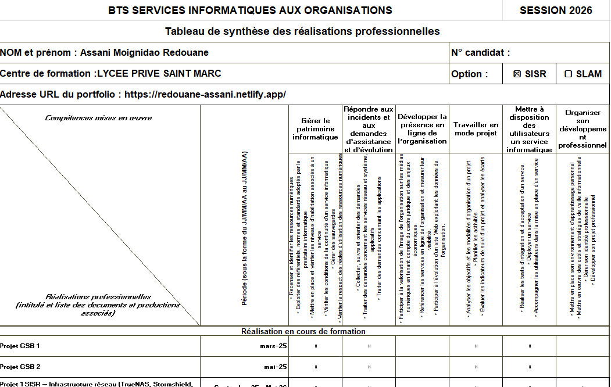

Support et Mise à Disposition (Épreuve E4)
L'épreuve E4 valide les compétences liées à la réponse aux attentes des utilisateurs, à l'accompagnement de la transformation numérique et au maintien de la qualité des services.
Mes Projets
Tableau de Synthèse des Compétences E4
Ce tableau récapitulatif permet de visualiser l'ensemble des compétences E4 mobilisées et validées au travers de mes différentes activités professionnelles (stages, alternance, ateliers).

Aperçu visuel du Tableau de Synthèse des Compétences.
Configuration et Administration d'un NAS Synology
Dans le cadre de mes activités professionnelles, j'ai réalisé la mise en place complète d'un NAS Synology DS225+ ainsi que la configuration d'un accès VPN sécurisé. Ces projets couvrent les compétences E4 liées à l'installation, la configuration et la documentation de solutions de stockage réseau et d'accès à distance.
PROJETS RÉALISÉS — PDF
Configuration complète d'un NAS Synology DS225+
Ce projet documente l'installation et la configuration intégrale d'un NAS Synology DS225+ en environnement professionnel. Principales étapes réalisées :
- Découverte et installation via findsynology.com et déploiement du système DSM
- Création d'une grappe RAID SHR avec système de fichiers Btrfs (2× HAT3300-4T → 3,6 To utilisables)
- Durcissement sécurité : mot de passe 16+ caractères, blocage IP, Anti-DDoS, ports personnalisés (35000/35001), pare-feu DSM, authentification 2FA/OTP, alertes email
- Accès distant : QuickConnect + DDNS
- Dossiers partagés chiffrés (COMMUN, DIRECTION, BACKUP) avec gestion des droits
- Antivirus Essential avec scan quotidien automatisé
- Hyper Backup : rotation locale (64 versions) + sauvegarde cloud C2 Storage
Mise en place d'un accès VPN OpenVPN sur NAS Synology
Ce projet présente le déploiement d'un tunnel VPN OpenVPN via le package VPN Server intégré au DSM Synology, permettant un accès distant sécurisé aux ressources internes. Étapes couvertes :
- Installation du client OpenVPN sur les postes utilisateurs
- Installation et activation du package VPN Server dans DSM
- Configuration : désactivation de la compression, autorisation d'accès au LAN local
- Redirection de port NAT sur le routeur (UDP, port 1194)
- Export du fichier VPNConfig avec IP publique / lien QuickConnect + port
- Import de la configuration sur le client → tunnel VPN opérationnel
DOCUMENTATION INTERNE / CLIENT
Procédure de connexion au NAS (SMB)
Document à destination des utilisateurs finaux ou clients, expliquant comment accéder au NAS via le protocole SMB depuis Windows ou macOS.
- Pré-requis : adresse IP ou nom d'hôte du NAS, identifiants valides, connexion au même réseau
- Windows : saisir
\\adresse_du_NASdans la barre d'adresse de l'Explorateur de fichiers - macOS : Finder → Aller → Se connecter au serveur →
smb://adresse_du_NAS
Procédure d'ajout de licences Google Workspace
Document interne / client décrivant la marche à suivre pour augmenter le nombre de licences d'un abonnement Google Workspace via le portail TD SYNNEX StreamOne Ion.
- Accès au portail TD SYNNEX → section StreamOne Ion
- Sélection du client dans la liste → onglet Inventaire
- Clic sur l'abonnement Google Workspace Business Starter (Annual Plan)
- Bouton GÉRER L'ABONNEMENT → modification du champ Number Of Seats
- Validation via Update → facturation au prorata jusqu'à fin de période annuelle
- Vérification de la prise en compte dans l'historique de l'abonnement